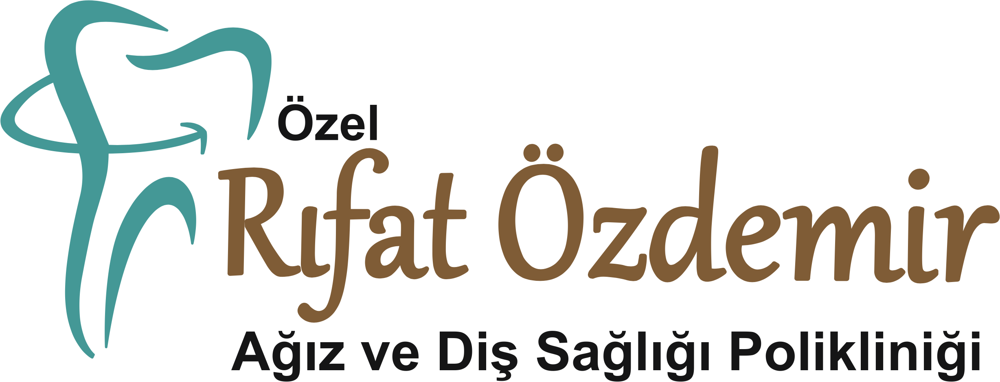
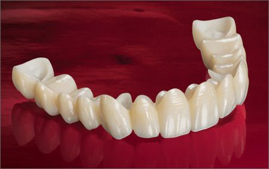

Doğal dişinizin ışık geçirgenliğini birebir taklit eden, metal içermeyen kusursuz estetik ve dayanıklılık.
Zirkonyum kaplama, klasik metal destekli porselenlerin aksine, alt yapısında gri metal yerine beyaz renkli bir alaşım olan "zirkonyum" maddesinin kullanıldığı en gelişmiş diş restorasyon yöntemlerinden biridir. İçerisinde metal barındırmadığı için diş etlerinde morarma yapmaz ve ışığı geçirme özelliği sayesinde doğal dişe en yakın görünümü sunar.
Biyolojik uyumu en yüksek materyallerden biridir; bu yüzden metal alerjisi olan hastalarda %100 güvenle uygulanabilir. Diş etine mükemmel bir şekilde tutunur, zamanla diş eti çekilmesine veya kenarlarda koyu renkli çizgilerin oluşmasına neden olmaz. Ayrıca çay, kahve veya sigara gibi etkenlerle renk değiştirmez.
Kırık veya ciddi madde kaybı olan dişlerin kurtarılmasında, beyazlatma işlemiyle sonuç alınamayan ileri derecede renklenmiş dişlerde, aralıklı (diastema) veya hafif çapraşık dişlerin düzeltilmesinde ve estetik gülüş tasarımı (Hollywood Smile) uygulamalarında en çok tercih edilen yöntemdir.
Zirkonyum kaplamalar doğal dişleriniz kadar sağlamdır. Günde iki kez diş fırçalama, diş ipi veya arayüz fırçası kullanımı ömrünü uzatır. Kabuklu kuruyemişleri (ceviz, fındık gibi) dişlerle kırmamak ve 6 aylık hekim kontrollerine düzenli katılmak, kaplamalarınızı uzun yıllar sorunsuz kullanmanızı sağlar.